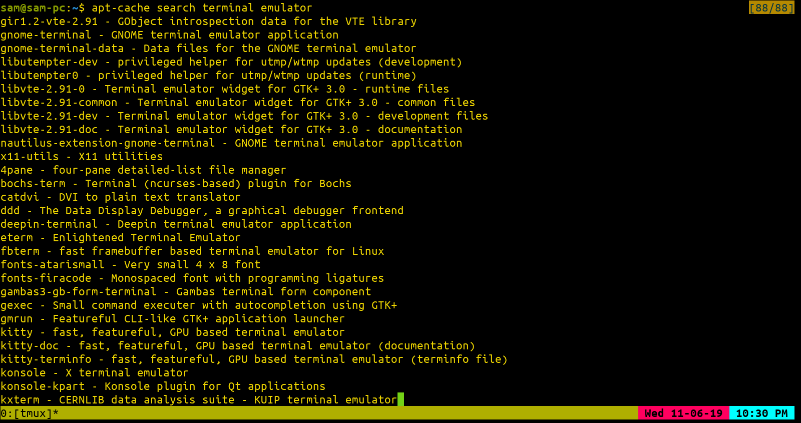
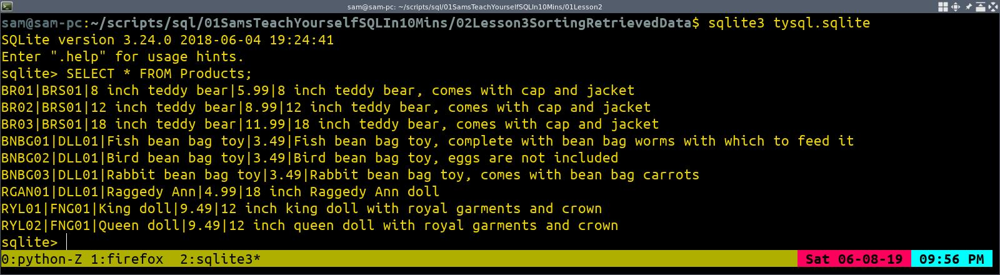
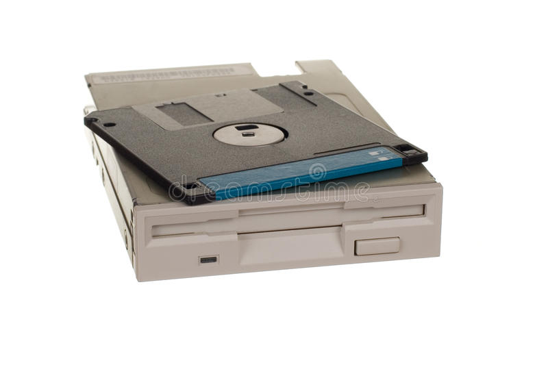
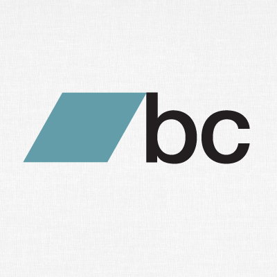
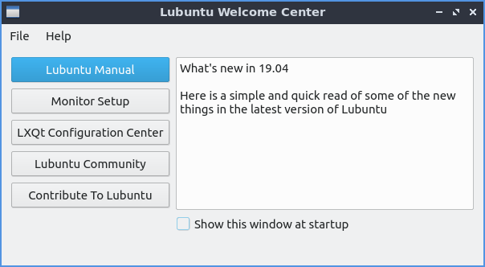

Latest GitHub Pushes
Project: The Complete Web Development Bootcamp Course
Project: Scripts
Project: Express Or Local App
Project: Nashville Weather Webscraper
Project: Garden Menu Webscraper
Project: Hockey Webscraper
Project: Garfield Comic Of The Day Webscraper
Project: Cat Of The Day Webscraper
How To Search For Packages In The Terminal On A Debian Based Linux Distro
November 6, 2019 by Samuel Banya
Here's a pretty useful command if you'd like to search for programs on the command line within a Debian based Linux distro:
apt-cache search (pattern or name of program you're interested in): This allows you to search for programs on the command line to install.
Here's an example of how to apply this idea in action. In this example, let's search for some terminal emulator programs on Debian's apt package manager by simply providing "terminal emulator" as the pattern.
apt-cache search terminal emulator
Here's a screenshot of Sakura terminal with tmux running that command:

As you can see, this is pretty powerful, especially if you know a few things about pattern matching with grep commands. Try using this idea to try some new programs out!
Samuel BanyaCustomer Success Support Analyst for TRG Screen I am currently a full-time tech support analyst by day, but learn programming through books and related projects at night and on the weekends. I hope to one day work as a Full Stack Web Developer so that I can work in a field I really enjoy. |
Gifs Page Is Now Up
November 6, 2019 by Samuel Banya
I finally got the Gifs page to work with the necessary file permissions, so go check it out. These are the gifs I've made for the past few years using a few apps on an old Samsung Galaxy S6 phone I've had. Definitely would like to continue making art in this style with the use of the program, GIMP, alongside some scripts to help automate it as creating gifs can be a tedious but fun process.
The Gifs webpage can be found here: http://www.musimatic.net/gifs.html
Samuel BanyaCustomer Success Support Analyst for TRG Screen I am currently a full-time tech support analyst by day, but learn programming through books and related projects at night and on the weekends. I hope to one day work as a Full Stack Web Developer so that I can work in a field I really enjoy. |
Emacs Way To Indent Multiple Blocks Of Code
November 4, 2019 by Samuel Banya
In case you ever need to indent an entire webpage (just like this one!) in Emacs, you can actually select all of the code present with:
C-x-f (Ctrl+x+f): This allows you to select all lines of code present in a file.
You can then finally then indent everything with:
C-M-\ (Ctrl + Alt + \ 'backslash'): This indents all lines of code accordingly.
I found out this trick the other day, and it helped so much especially on a site like this when I use multiple programming languages like Python 3 vs. JS vs HTML+CSS. By letting Emacs do the work to beautify the code, it makes the process of creating projects that much easier.
Samuel BanyaCustomer Success Support Analyst for TRG Screen I am currently a full-time tech support analyst by day, but learn programming through books and related projects at night and on the weekends. I hope to one day work as a Full Stack Web Developer so that I can work in a field I really enjoy. |
Future Color Scheme Changes
November 3, 2019 by Samuel Banya
I am planning to do a re-design in early 2020 for this site to be more minimalistic in design as I think the style attempt is good, but it could be a bit simpler, and be based on more templated designs. I'll figure out how to do this using either purely templates, or purely JS.
I am really looking forward to working on the Bandcamper project soon. This project's GitHub page can be found here: https://github.com/SBanya/Bandcamper
The goal of this project is to perform the following actions:
- Scrape the Bandcamp tags page for the latest geographical tags (ex: US states) and genres
- Display a webpage to the user to prompt them to ask what genre or geographical state they'd be interested in terms of exploring bands from via a related email.
- Provide the user with the email at 6 AM every day to make the program static and not dependent on being a web app.
- Provide the user with the ability to opt out of an email every time.
- Limit messages per email to about 10 to prevent spam.
- Provide a user with a script that uses Youtube-dl Linux utility that automatically downloads these Bandcamp music for users.
Samuel BanyaCustomer Success Support Analyst for TRG Screen I am currently a full-time tech support analyst by day, but learn programming through books and related projects at night and on the weekends. I hope to one day work as a Full Stack Web Developer so that I can work in a field I really enjoy. |
Site Update: October 2019
October 28, 2019 by Samuel Banya
I have finished the Express Or Local App, which is a Python 3 based webscraper runs on a non-stop cron job that pulls MTA 7 Train data and displays it in a nice and easy to read HTML table. I'm glad this project has been finished as it has taken quite a long time to pull off. I've been in the process of making sure my older webscraper projects are working, and have fixed the Hockey Webscraper to make sure it runs daily. Once my projects are back and running, I'm planning to start the Bandcamper Python 3 based project, which is just a daily emailing agent that will email someone their top 5 bands of the day from Bandcamp based on genre or geographical locations they entered via a web request form (and of course they can opt out of it at any time).
Unfortunately, I'm still paying quite a bit of medical bills as a result of that stomach surgery (insurance is a joke) and need to spend on a car soon, so I won't be able to do any maker projects (CNC engraving, synth creation, etc) any time soon but I still am thinking of some cooler projects down the line to do. I am also thinking to possibly review music gear as well as there's a bit of niche territory that's covered by bedroom musicians like myself that aren't really represented on the Internet. I'm also looking forward to making more headway through the "Complete Web Developer Bootcamp" Udemy course I've been slowly working through just so I can improve this site and make better web apps overall. I've kind of realized I still like help-desk type work, and honestly don't care if I end up fully as a developer after all as I've had a lot of fun with these pet projects anyway. Honestly, its what you make out of life, and even with a career, a job is just a job at the end of the day. I think its only when I'll be able to get my side music based instrument business going is when I'll truly be able to push myself for the goals I've wanted to achieve.
I'm also making progress of making new music too, and the keyboard skills have been coming along quite nicely. I'm also debating a complete design overhaul for this site in 2020 to include a way more simpler layout, and washed out colors. Should be fun.
Samuel BanyaCustomer Success Support Analyst for TRG Screen I am currently a full-time tech support analyst by day, but learn programming through books and related projects at night and on the weekends. I hope to one day work as a Full Stack Web Developer so that I can work in a field I really enjoy. |
Site Update: September 2019
September 2, 2019 by Samuel Banya
I have been healing after a major stomach surgery about a month ago, but have been doing very well in terms of progress. As a test for myself, I put myself up to the challenge of being able to try to tap into GitHub's REST API. Just in case you are wondering, "REST" stands for "RE presentationalState Transfer", while "API" stands for "Application Programming Interface". It is basically a way you can access a company's website's data, which in my example is act of me obtaining the company, GitHub's data relating to my GitHub user commits.
In case you'd like to learn about REST API's, please check out this really good video on the topic, which is available at this link.
You can see the related results on the Jumbotron element at the top of my web page, since all my projects are now updated with their latest commit dates and links. This single change is a vast improvement since it makes anyone including future job recruiters more aware of the exact changes I've made to my personal projects, as well as specific code examples if needed. One of a technical job recruiter's first questions is always, "What's your GitHub?". Well, now I can just point them to my web page instead :)
I've also moved away from NYC, and have had a great time so far. I honestly don't miss it since I definitely have spent my time in New York, and would rather return as a tourist for fun whenever I'd like to. I'm looking forward to doing more art projects in terms of lithography, and will actually expand this site to showcase my previous digital art as well since this is my own site after all, and would rather showcase them here than on other platforms. I am also debating how best to make synth projects while in an apartment, and am also debating building a mini-Arduino based CNC in the future.
Samuel BanyaCustomer Success Support Analyst for TRG Screen I am currently a full-time tech support analyst by day, but learn programming through books and related projects at night and on the weekends. I hope to one day work as a Full Stack Web Developer so that I can work in a field I really enjoy. |
Sudo Sam: More Basic Emacs Commands
July 7, 2019 by Samuel Banya
I wanted to share a couple of new Emacs commands I learned while on a plane ride back to New York after a week-long vacation on the West Coast.
m-f: This allows you to go forward one word in emacs.
m-b: This allows you to go backward one word in emacs.
c-a: This allows you to go to to the beginning of a line in emacs.
c-e: This allows you to go to the end of the current line in emacs.
m-a: This allows you to go back to the beginning of a sentence in emacs.
m-e: This allows you to go to the end of the current sentence in emacs.
c-u: This is the 'unit' command that allows you to do multiples of a command in emacs.
Ex of using the 'c-u' command in emacs to allow you to go forward 20 characters:
c-u 20 c-f
Samuel BanyaCustomer Success Support Analyst for TRG Screen I am currently a full-time tech support analyst by day, but learn programming through books and related projects at night and on the weekends. I hope to one day work as a Full Stack Web Developer so that I can work in a field I really enjoy. |
Site Update: Updated With The Power Of 'rsync' And 'symlinks'
June 25, 2019 by Samuel Banya
I am now updating this website with the power of 'rsync', which is a Linux command line utility that I use to automatically sync the changes from my local computer (laptop) to the Digital Ocean droplet that hosts this site. I have also set this to be done on a Crontab job, meaning that if I ever feel like updating this website, I can do so at my own pace, and it will be automatically be updated every 5 minutes. This was also made possible with the idea of using a 'symlink', which is in the same vein as using a shortcut, but between two file locations in Linux. Here's one link to learn about 'rsync', and here's another link to learn about 'symlink' or the 'ln' command in case you're interested.
A special thank you goes out to people from the #linux channel on IRC that helped me through this process since it was a bit difficult to wrap my head around the process of finally using 'rsync' after days of getting so many permission errors.
The specific command in case you would like to use it on your site is as follows, NOTE: I have used parentheses where YOU need to enter in values:
rsync -e 'ssh' -avzp (path/to/public_html/on/local/machine/with/ending/slash/)
user@(ip address for remote server):/path/to/directory/on/website/machine/with/slash/at/end/
Here's an even more specific example with fake ip address values for context:
rsync -e 'ssh' -avzp /home/user/public_html/ user@555.55.555.5:/home/user/public_html/
One more thing to keep in mind is that you will need to create a symlink between the actual directory that's necessary to host the website on Apache. For me, this was in /var/www/musimatic.net/public_html/ You will need to create symlink with the "ln" command to create a "link" or "shortcut" to the home directory that's easily accessible to any user who has SSH access to the machine hosting your website. This part of the process is done so that rsync can do its syncing ability without having to worry about needing any root access.
Samuel BanyaCustomer Success Support Analyst for TRG Screen I am currently a full-time tech support analyst by day, but learn programming through books and related projects at night and on the weekends. I hope to one day work as a Full Stack Web Developer so that I can work in a field I really enjoy. |
Sudo Sam: SQL Lesson
June 8, 2019 by Samuel Banya
The Creators of SQL
Donald D. Chamberlin, and Raymond F. Boyce designed SQL while working at IBM to manipulate and retrieve data that was stored in IBM's original sudo-relational database management system, System R, which was developed at IBM's San Jose Research Laboratory in the 1970s.1
Reasons To Use SQL
- SQL (Structured Query Language) allows you to easily query databases for use in your data projects.
- Though there are many variants on DBMS (Database Management System), knowing the basics can allow you to interact with databases regardless of what software you eventually use.
- Being able to manipulate queries results in far more powerful results than simply using Excel filters on a dataset in a spreadsheet.
The Basics Of SQL
I've been learning SQL as a result of my job, but also on the side as well to include databases for the fun side projects I have. As a result, I've been able to get a bit more familiar with the basics of how SQL works, so I'd love to impart some of the basics in this post.
How To Use Sqlite3 In Linux Bash Shell
Starting Sqlite3 Using An Existing Database
Here's the basic syntax on how to open up any Sqlite database using the Linux Bash Shell. First, start up a terminal in your Linux OS, and run the following command after installing Sqlite3 to open up an any database you'd like. The syntax is: sqlite3 (name of database). Here's an example:
sqlite3 example.db
Running A .sql Script After Loading A SQL Database
Now that we've gotten the database loaded, use the '.read' command to open up any SQL script that you currently have present in the same directory. For example, I'm going to load an example script called 'example.sql':
.read example.sql
Your First SQL Select Query
Now that we've discussed how to open up Sqlite3 with the Bash shell, let's put this to good use by creating our first query. In this example, I am using the Sqlite database provided by the book, "SamsTeachYourself SQL in 10 Minutes", which can be found at here. Let's begin by opening up the 'tysql.sqlite' database on the Linux Bash Shell in Sqlite3, and then query it directly:
sqlite3 tysql.sql
Now, let's use the 'SELECT' keyword to 'select' some of the data present. More specifically, let's just select all of the data present by using the '*' or 'Wildcard' character in order to select all of it with the following SQL statement. Also, we need to specify what table it is from using the 'FROM' keyword, which we'll make sure to tell SQL to grab data from the 'Products' table.
SELECT * FROM Products;
Our result would look like the following:

Voilah! You now know how to do the most basic SQL select statement of all using the '*' wildcard character.
Sources
Samuel BanyaCustomer Success Support Analyst for TRG Screen I am currently a full-time tech support analyst by day, but learn programming through books and related projects at night and on the weekends. I hope to one day work as a Full Stack Web Developer so that I can work in a field I really enjoy. |
Sudo Sam: Emacs Lesson
May 26, 2019 by Samuel Banya
The Basics Of Emacs
A Brief History Of The Emacs Text Editor
Richard Stallman created Emacs in late 1976 after combining the MIT lab 'E' text editor, with a set of macros to make the text editor easier to use.1
The Basics Of Emacs

I have begun to learn the text editor, Emacs, with the use of their in-built tutorials. I have always liked Vim, but would like to learn both in case it become useful later for a future Dev or Dev Ops role. If there's something I've liked so far is the capability of using multiple buffers, as well as the idea to use multiple plugins to treat Emacs truly as an all-in-one OS-like application.
Useful Beginner Emacs Shortcuts
Moving Around In Emacs

Ctrl + v: Move Forward One Screenful
Meta + v: Move Backward One Screenful
Ctrl + l: Clear The Screen, And Redisplay The Text (Center, Bottom, Top)
Ctrl + n: Next Line
Ctrl + p: Previous Line
Ctrl + f: Forward One Character
Ctrl + b: Previous One Character
Meta + f: Forward One Word
Meta + b: Backward One Word
Saving And Quitting In Emacs

Ctrl + x; Ctrl + s: Save Your File
Ctrl + x; Ctrl + c: Quit Emacs
Sources
Samuel BanyaCustomer Success Support Analyst for TRG Screen I am currently a full-time tech support analyst by day, but learn programming through books and related projects at night and on the weekends. I hope to one day work as a Full Stack Web Developer so that I can work in a field I really enjoy. |
Long Awaited Update (Back, Now With The Power Of DigitalOcean)
May 12, 2019 by Samuel Banya
Digital Ocean Now Hosts This Site
I've recently shifted this website to now be hosted on DigitalOcean droplet, which means that I now have total freedom of what gets installed on the backend of the site, and can actively support my existing projects with cooler Linux functionalities, especially with Cron jobs. I have also been getting the hang of using SFTP to download the site and work on it remotely, and then reupload it when I'm done instead of having to use SSH which disconnects regularly.
Express Or Local Python Project

I've been still working on that MTA Python based project, but re-wrote it for the third time to instead utilize the Marshmallow Python library to create database table schemas that end up being used by SQLAlchemyCore.
Bandcamper Python Project

I have also been working on a Python project called Bandcamper, which aims to allow a user to search for artists on Bandcamp in a terminal window without having to use an internet browser. Ultimately, I want the end user to be able to stream the final results in their given music player of choice, and also be able to download any songs they want, with whatever quality they want up to 320 kbps mp3. Past that, they'd have to pay the artist for their music, but this is better than the existing comparable project on Python PyPi that only allows for a measley 128 kbps mp3 download, which is terrible beyond words in terms of music quality.
Fake Website And JavaScript Progress

I've been working on "Emulation Nation", which is just a fake website about emulation that I've been utilizing my JS skills with. I've also been doing the tutorials for Puppeter since I'm planning on porting the webscraper I've created at work to JS with Puppeter for a more responsive webpage experience.
Samuel BanyaCustomer Success Support Analyst for TRG Screen I am currently a full-time tech support analyst by day, but learn programming through books and related projects at night and on the weekends. I hope to one day work as a Full Stack Web Developer so that I can work in a field I really enjoy. |
Lubuntu OS Contributions
January 19, 2019 by Samuel Banya
Lubuntu Welcome Center
This is the Welcome Center I have been developing for the past several months with the use of C++, as well as the Qt framework. Thankfully, it is now a fully functional one window application that is meant to help guide a new user of Lubuntu of what to do after installing the operating system.
Features of the Welcome Center
- Open The Lubuntu Manual Webpage
- Configure Monitor Settings (Resolution)
- Open LXQt Configuration Center To Further Adjust Entire OS Setup
- Open Lubuntu Community Links Webpage To Get Help Through IRC, Telegram, And Mailing Lists
- Open Up Contribution Guide To Find Out How To Help Contribute Work Towards Lubuntu
Screenshots

Samuel BanyaCustomer Success Support Analyst for TRG Screen I am currently a full-time tech support analyst by day, but learn programming through books and related projects at night and on the weekends. I hope to one day work as a Full Stack Web Developer so that I can work in a field I really enjoy. |
Site Update
January 11, 2019 by Samuel Banya
Current Progress In Programming Projects, And Future Plans For Site
I have begun the new year with quite a few changes to note. I was unfortunately sick for the last two weeks, but began an awesome new job doing customer support for a software firm. I plan on sharing my adventures in learning automation tools like Selenium, and PowerShell, in order to automate some of the boring or repetitive tasks regarding customer tickets in ZenDesk, and JIRA.
I finally have the Hockey Webscraper up and running after getting the FTP side of things resolved with the web hosting site and am trying my best to still work on finishing the MTA based Express or Local App. I also worked on the Jim Davis based fan website as well.
I am actively working on improving the overall feel of this webpage to be more like WordPress in design, but still am adamant on using my own CSS styling, alongside Bootstrap.
I will use this site as an educational tool in articles that I will call "SuperUser Sam" in which I write about programming, automation, Linux utilities, Raspberry Pi, etc. I am really looking forward to this, and hope you will join me in my love to make everyone's lives a little bit easier with the use of computers.
Samuel BanyaCustomer Success Support Analyst for TRG Screen I am currently a full-time tech support analyst by day, but learn programming through books and related projects at night and on the weekends. I hope to one day work as a Full Stack Web Developer so that I can work in a field I really enjoy. |